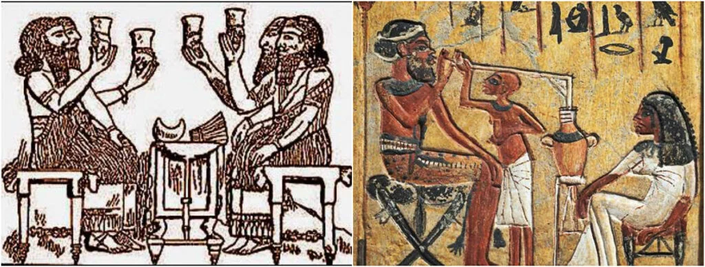

ДАЙДЖЕСТ / BODREEVSHOW
История пивоварения

Пиво — не просто напиток, а молчаливый свидетель человеческой истории. Его путь начался ещё в эпоху неолитической революции, когда человек перешёл от собирательства к земледелию.
• Зарождение (7–5 тыс. лет до н. э.): в плодородном полумесяце (территория современных Ирака, Сирии, Ливана, Иордании, Израиля) шумеры и египтяне открыли магию брожения. Пиво стало пищей, лекарством и даже валютой. В Шумере его пили через соломинки из общих сосудов, а богиня Нинкаси считалась покровительницей пивоварения.
• Античность (I тыс. до н. э. — V в. н. э.): греки и римляне предпочитали вино, но на окраинах империи — у кельтов и германцев — пиво процветало. Оно было напитком воинов и крестьян.
• Средневековье (V–XV вв.): монастыри стали центрами пивоваренного искусства. Монахи усовершенствовали рецептуру, начали использовать хмель (что позволило хранить пиво дольше), а также стандартизировали производство. В это время появляются первые гильдии пивоваров.
• Новое время (XVI–XIX вв.): с развитием городов пиво становится массовым продуктом. В Баварии закрепляется «Закон о чистоте пива» (Reinheitsgebot, 1516 г.), регламентирующий состав. Начинается экспорт пива, особенно популярны становятся английские эли и портеры.
• Промышленная революция (XIX в.): изобретение термометра, ареометра и пастеризации (Луи Пастер) позволяет перейти к промышленному производству. Пивоварни превращаются в фабрики, напиток становится доступным повсеместно.
• Современность (XX–XXI вв.): эпоха крафтовой революции. Наряду с крупными корпорациями расцветают малые пивоварни, экспериментирующие с рецептами, стилями и вкусами.